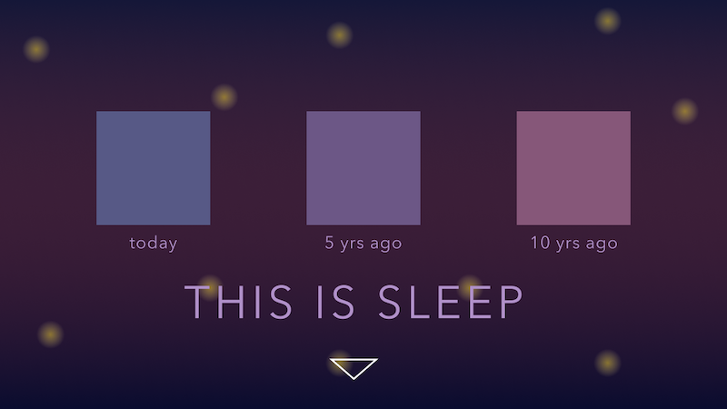
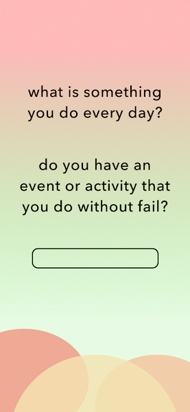

Design Comp 1
Project Overview
My project revolves around cellphone addiction and screen time. I will create an educational, engaging, and empowering experience using various forms of web responsiveness and interactivity.
I have divided the overall story into three sections.
The first focuses on phone/screen time usage awareness and aims to convey the huge increase of screen time usage compared to the consistency of sleep and work time in a 10 year period.
The second section will set up an "every day" habit to help the user reduce screen time using a form.
Lastly, the third section will be an ending webpage that affirms the importance of screen time awareness and reduction.
Inspiration has been drawn from the interactive websites Here Is Today, MadLibs, and Nam Insik's Portfolio.
Desktop Sketch: Phone/Screen Time Usage Awareness

Each square represents a day: one from present day, 5 years ago, and 10 years ago. Upon clicking the screen, the squares will grow into rectangles that are shaded to represent the average hours of sleep per day. After this, the down arrow cursor leads the user to the next section. The background imitates the night sky (since it's sleep) and the colors are dark, cool, and muted.
Font: Avenir Next, all caps
Color Inspiration: Night sky, stars, twilight
Mobile Sketch: Setting Up Habits to Reduce Screen Time

The webpage asks the user to consider an activity that they do every day without fail. It will take input from the user and lead them to the next question. Once the user has submitted all questions, it will generate a concrete action that the user can take to reduce their screen time and instead, engage with the world. The colors are bright and pastel toned, contrasting the dark, muted colors of the previous sleep section.
Font: Avenir Next, lower case
Color Inspiration: Forest, sunrise, fruit